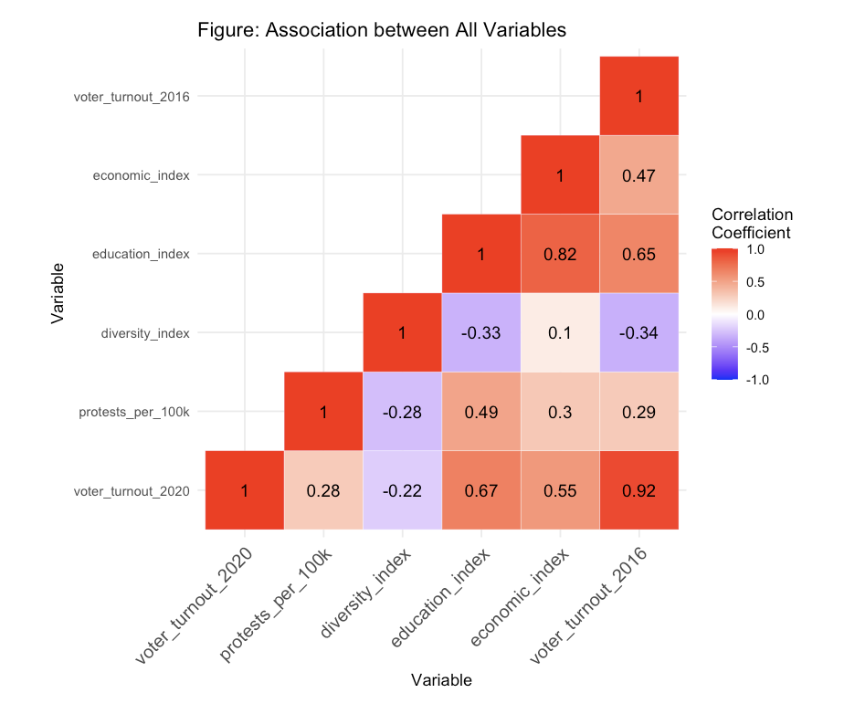
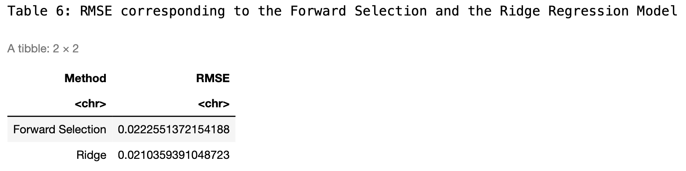
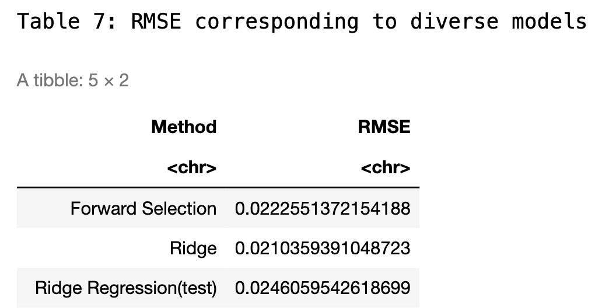
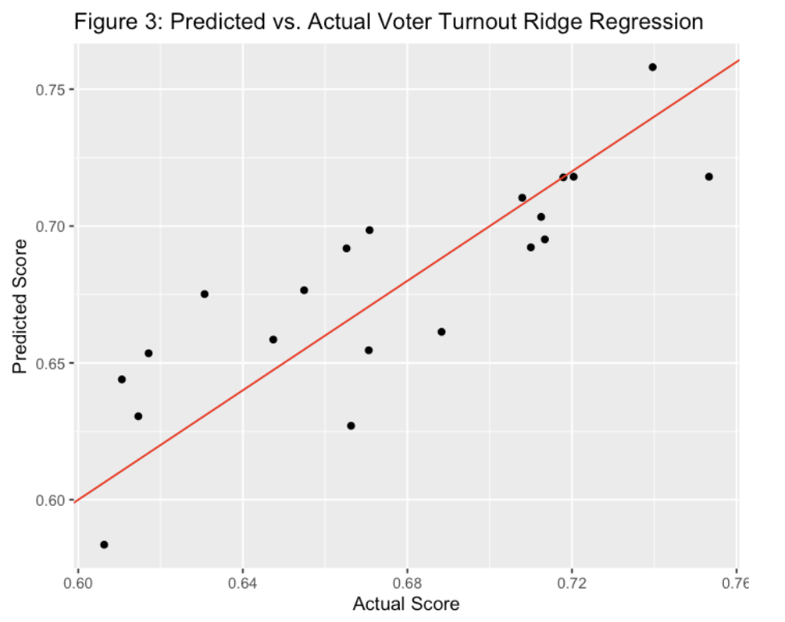
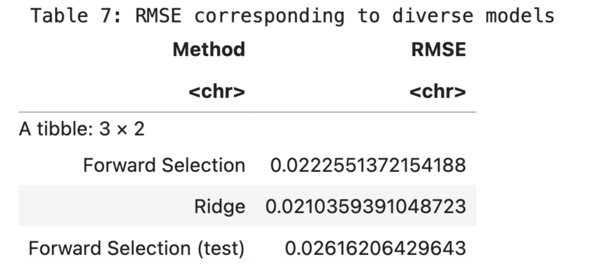
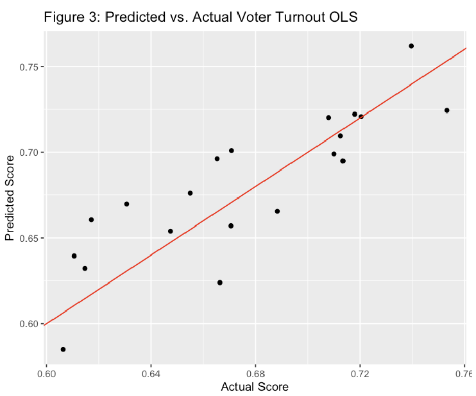

Introduction
With a background in political science and a current focus on computer science, I am very interested in the intersection of these fields. This project aims to integrate statistical modeling techniques within a political setting.
The primary objective of this project was to develop a predictive model capable of estimating voter turnout for the 2020 US presidental election. Recognizing the complexity of voter behavior, this model considers various factors that could potentially influence turnout rates across different states. Based on comprehensive research, the study identified six key variables that might affect these rates. The variables were selected after thorough analysis of several datasets and scholarly sources, all of which are cited below.
-
I set out to answer the following questions:
- Is there a significant relationship between the varaible Voter Turnout 2020 and the other socio-economic and political factors?
- How do various political factors help predict voter turnout rates in 2020?
Data Set
Here is a detailed look at each variable considered in the model:
- Diversity Index: This index measures the probability that two randomly selected individuals from a state belong to different racial or ethnic groups, using data from the U.S. Census Bureau (2020).
- Education Index: I constructed this index by integrating several educational metrics: high school dropout rates, the percentage of individuals with higher education diplomas, and adult literacy rates (for those aged 15 and older). The index is calculated as follows:
- Economic Index: This index was developed to gauge the economic well-being of each state by combining unemployment rates, poverty levels, and median household income.
- Voter Turnout Rate 2016: Voter turnout data calculates the percentage of eligible voters from each state who voted in the 2016 election. It was obtained from the United States. Elections Project (2016).
- Polarization Variance: Measures the level of political polarization among residents in each state. Calculated by using entropy measure on categorical variables, where respondents of each state indicated their level of political preference.
- Protest per 100k: The number of protests in each state per 100,000 citizens.
- Voter Turnout Rate 2020 (Response): Voter turnout data calculates the percentage of eligible voters from each state who voted in the 2020 election. It was obtained from the United States Elections Project (2020).


Figure 1:

With these variables I created a heat map to see the correlation between these predictor variables and the response variables (Voter Turnout 2020).
Figure 2:
Figure 2 visualizes the association between the response variable and its six numerical explanatory variables. The response variable voter_turnout_2020 has a relatively strong association with voter_turnout_2016, economic_index, and education_index.
Methods and Results
Overview
This project will employ both the forward selection algorithm and the ridge regression method on a training set derived from the current data. After selecting the most optimal model, I will assess its performance on the testing data to ensure its effectiveness and accuracy.
- Why is forward selection algorithm chosen?
- The Forward Selection technique can simplify models and prevent overfitting by aiding in model simplification. It starts with no predictors and adds them one by one, choosing at each step the variable that has the most significant statistical contribution to the model.
- Why is Ridge method chosen?
- From the exploratory data section, I suspect the presence of multicollinearity. While traditional linear regression can yield unstable and imprecise coefficient estimates, the introduction of a penalty term can shrink the coefficients, stabilizing the model and mitigating the issue of multicollinearity.
Testing and Training
Initially, I acquired a training and a testing set by reserving 40% of the original dataset for testing purposes, this data set is relatively small so the split is conservative. I refrain from inspecting the testing set until after the model selection process is completed.
Cross Validation
To estimate the predictive performance of the selected model, I utilized cross-validation in order to assess how well the model generalizes to a data set and to minimize the potential for overfitting, thereby ensuring that the model's performance is robust across various subsets of the data within both forward selection and ridge regression techniques.
Figure 3:

Foward Selection
Using the cv errors from above in the context of forward selection, cross-validation errors helps determine the optimal number of predictors to include in a model. I calculate the average across the columns of this matrix to produce a vector. In this vector, the i-th element represents the cross-validation error for the i-th variable model.
Figure 4:

I see from the figure below that the 3-variable model has the lowest mean of the cross-validation error. The RMSE is then calculated for the OLS model using the 3-variable forward selection process.
Figure 5:

Ridge Regression
Moving onto ridge regression, I trained the model using the same training set that was used for forward selection. Notably, the model demonstrates optimal performance when the lambda value is set at 0.06738, corresponding to the lowest mean squared error (MSE). For a comprehensive comparison, I have included the root mean squared error (RMSE) from the cross-validation of the ridge model in the summary table alongside the results from the forward selection method.

Employing RMSE as the metric for model performance assessment, the ridge regression method exhibits slightly better predictive accuracy compared to other models tested. Given its effectiveness, I will use ridge regression to enhance our predictive framework, ensuring robustness against overfitting and improving generalization on future unseen data.
Figure 6:
Creating the Model
To construct the most robust model for predicting 2020 voter turnout, I integrated insights from both forward selection and ridge regression techniques. While the ridge regression model exhibited slightly better performance, evidenced by a lower RMSE compared to the forward selection model, the scores were quite close. Consequently, I initially developed a ridge regression model to leverage its strength in handling multicollinearity. Then, I also constructed an Ordinary Least Squares (OLS) model using forward selection. This approach allowed me to directly compare the two and clearly visualize the differences in their predictive capabilities.
Ridge Regression Model on Testing Data
After predicting outcomes on the testing data using the previously established optimal lambda, the Ridge Regression model yielded an RMSE of approximately 0.0246, which is slightly higher than the RMSE observed on the training data. This is a common occurrence in predictive modeling, as models tend to fit the training data slightly better than unseen testing data. The model achieved an R-squared value of 0.927, indicating that it accounts for 92.7% of the variance in the response variable within the testing dataset. Additionally, the adjusted R-squared value is 0.908, reflecting a high level of explanatory power while adjusting for the number of predictors in the model. This adjusted metric is particularly important in Ridge Regression, as it provides a more accurate measure of model performance when numerous predictors are involved.
Figure 7:
The graph below displays a comparison between the predicted and actual data using the ridge regression model.
Figure 8:
Forward Selection and OLS on Testing Data
While Ridge Regression demonstrated superior RMSE performance, I was also interested in exploring the predictability of an OLS model to understand the differences between the two approaches. The OLS model is advantageous due to its simplicity and straightforward interpretability, coupled with a robust variable selection process through forward selection. This process effectively balances the inclusion of significant predictors while managing potential multicollinearity issues.
Initially, forward selection pinpointed the most statistically significant predictors for voter turnout: the level of state polarization, the state's education index, and previous voter turnout figures. Employing these predictors, the OLS model successfully explained 93.3% of the variance (as indicated by the multiple R-squared) and adjusted to 92.5% when accounting for the number of predictors (adjusted multiple R-squared). Impressively, the OLS model achieved an RMSE of 0.0243 on the test data, which slightly outperformed the Ridge Regression model. Consequently, both models exhibit strong performance, each with distinct advantages in terms of complexity and interpretability.
Figure 9:
Figure 10:
Discussion
This analysis successfully addresses two initial questions: firstly, the extent of the relationship between historical voter turnout data and the turnout in 2020, and secondly, the relevance of various socio-economic and political factors in predicting voter turnout. The analysis revealed that the variable voter_turnout_2016 holds a substantial predictive power for voter_turnout_2020, indicating its strong statistical significance in the OLS model.
Both the Ordinary Least Squares (OLS) and Ridge Regression (RR) models were employed to validate these findings. The OLS model, utilizing forward selection to identify the most impactful variables, achieved an impressive adjusted R-squared value of 0.933, suggesting a robust explanatory power of the selected independent variables. All key predictors in this model displayed p-values well below the 0.05 threshold, affirming their significance.
Conversely, the Ridge Regression model, known for its ability to manage multicollinearity and enhance prediction stability, also demonstrated significant predictive efficacy. Although its RMSE on the test data was slightly higher compared to the OLS model, it offered valuable insights into the generalized behaviour of predictors under regularization constraints.
The results underscore the importance of historical voting patterns, alongside socio-economic conditions such as education and economic well-being, in influencing voter turnout. These findings carry substantial implications for political campaigns and policymakers focused on boosting voter engagement. It is recommended that future strategies incorporate these significant predictors. By targeting educational improvements and economic empowerment, alongside leveraging historical turnout data, political campaigns can devise more effective strategies aimed at increasing voter participation.
Furthermore, this research provides a foundation for political analysts and campaigners to customize their approaches based on quantitatively validated factors. Such targeted strategies are likely to yield higher voter turnout, reflecting a more engaged and informed electorate.
The code for the model can be found on my github along with the seed and data set for replicability: Voter-Turnout-Model.git
Code for creating and cleaning the data set can be found here: Poli_Project.git
- Reference:
- Bureau of Labor Statistics, U.S. Department of Labor. (2024). Local Area Unemployment Statistics. https://www.bls.gov/web/laus/laumstrk.htm
- CNN. (2020). Election 2020: Presidential election results. https://www.cnn.com/election/2020/results/president
- Federal Reserve Bank of St. Louis. (2022). Educational Attainment, Annual: Bachelor's Degree or Higher by State. https://fred.stlouisfed.org/release/tables?eid=391444&rid=330
- Federal Reserve Bank of St. Louis. (2022). Real Median Household Income by State, Annual. https://fred.stlouisfed.org/release/tables?eid=259515&rid=249
- McDonald, M. (2022). 2022 General Election Turnout. United States Elections Project. https://election.lab.ufl.edu/voter-turnout/2022-general-election-turnout/
- United States Department of Agriculture, Economic Research Service. (2023). Percent of total population in Poverty. https://data.ers.usda.gov/reports.aspx?ID=17826
- U.S. Census Bureau. (2020). Racial and Ethnic Diversity in the United States: 2010 and 2020 Census. https://www.census.gov/library/visualizations/interactive/racial-and-ethnic-diversity-in-the -united-states-2010-and-2020-census.html
- World Population Review. (2024). High School Graduation Rates by State 2024. https://worldpopulationreview.com/state-rankings/us-literacy-rates-by-state
- World Population Review. (2024). U.S. Literacy Rates by State. https://worldpopulationreview.com/state-rankings/high-school-graduation-rates-by-state
This past semester, I was in a political science course about managing quantitative data in political science. This personal project was inspired by the work I had done in that class. The relationship explored for my project between polarization and protests employs more basic measures of linear regression and data analysis. A more detailed look into the variables I chose and the way they were cleaned and created are listed in these reports. I have linked the reports below.